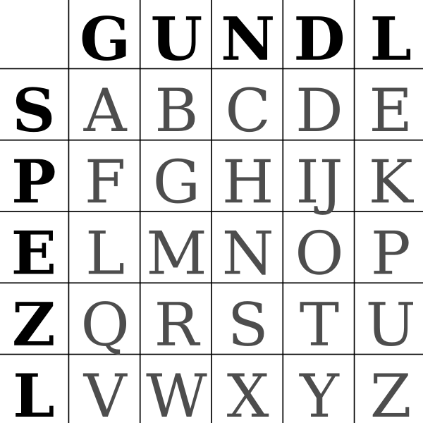

- Gundl/Spezl
- Gundl/Spezl ist eine Ersetzungs-Geheimschrift, in der jeder Buchstabe durch zwei andere ersetzt wird, welche durch eine einfache Auflösungsgrafik gelöst werden kann.
- Auflösungstabelle
-
| GS | A |
| US | B |
| NS | C |
| DS | D |
| LS | E |
| GP | F |
| UP | G |
| NP | H |
| DP | I |
| DP | J |
| LP | K |
| GE | L |
| UE | M |
| NE | N |
| DE | O |
| LE | P |
| GZ | Q |
| UZ | R |
| NZ | S |
| DZ | T |
| LZ | U |
| GL | V |
| UL | W |
| NL | X |
| DL | Y |
| LL | Z |
- Auflösungsgrafik
- Der erste Buchstabe wird in der Spalte gesucht, der zweite in der Reihe. Der Schnittpunkt ist der entschlüsselte Buchstabe.
- 